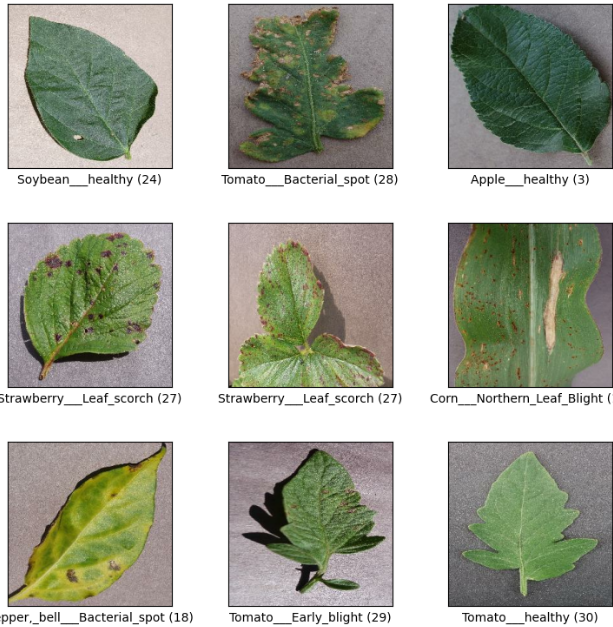
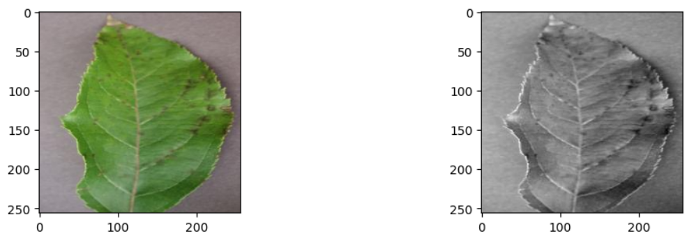
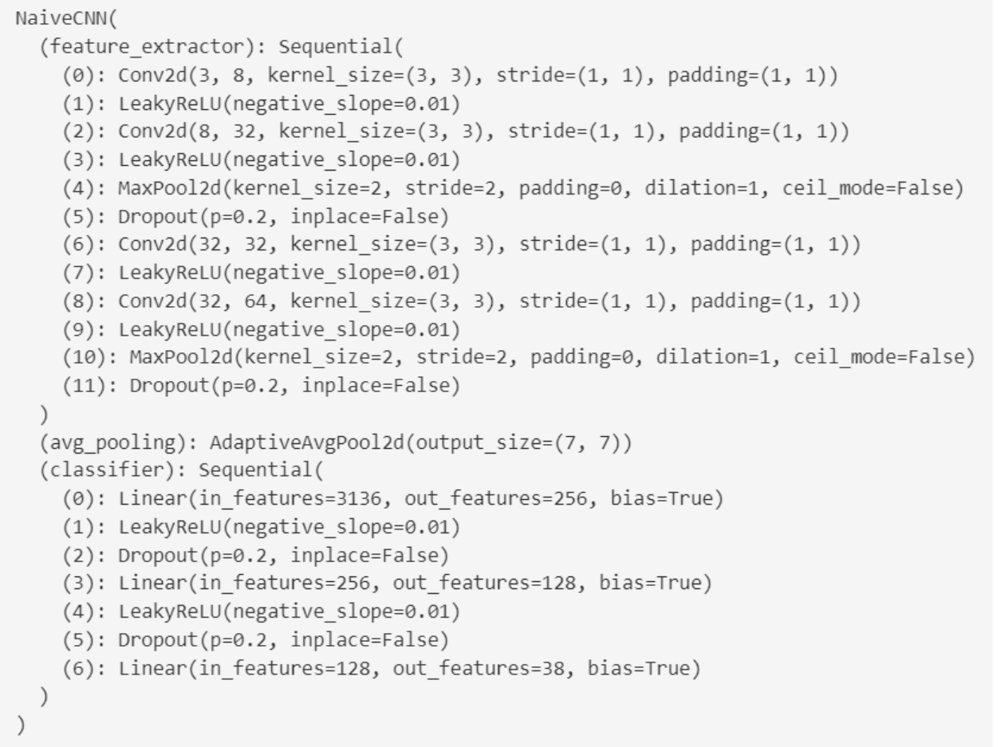
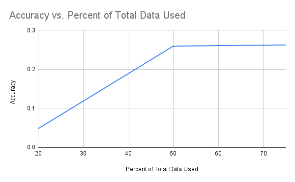
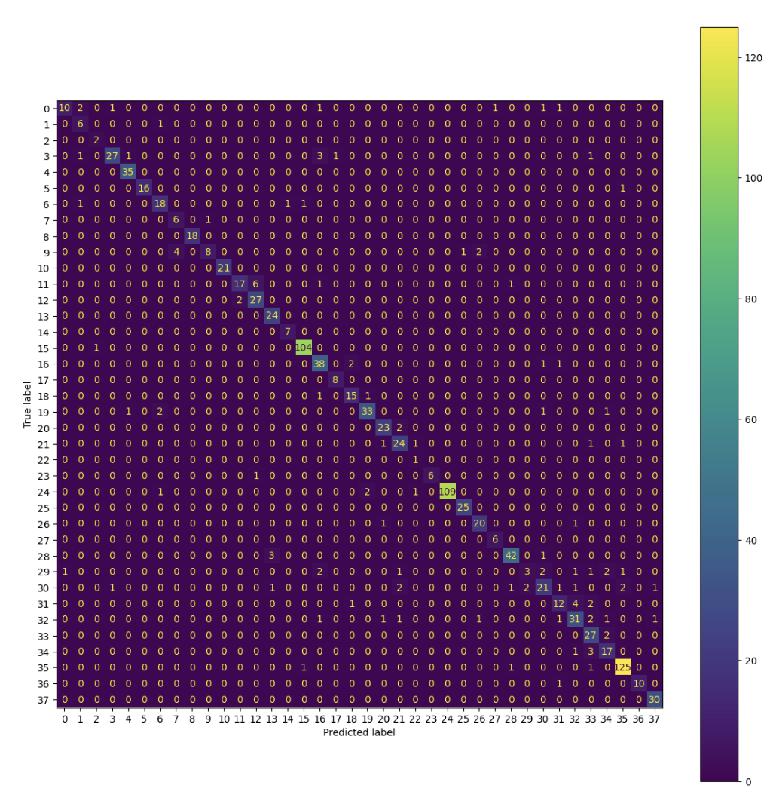
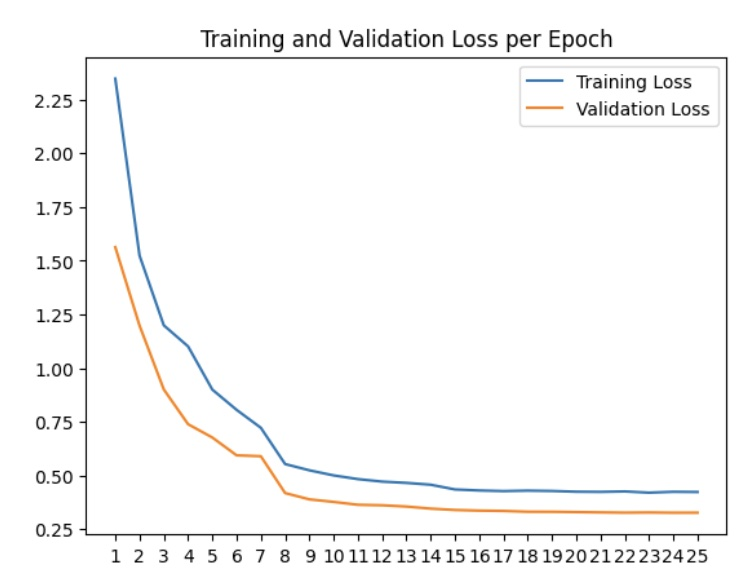
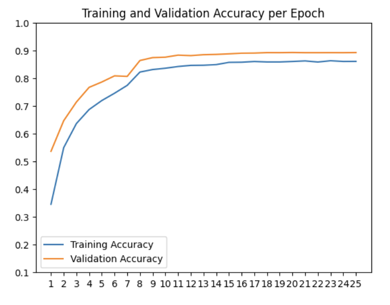
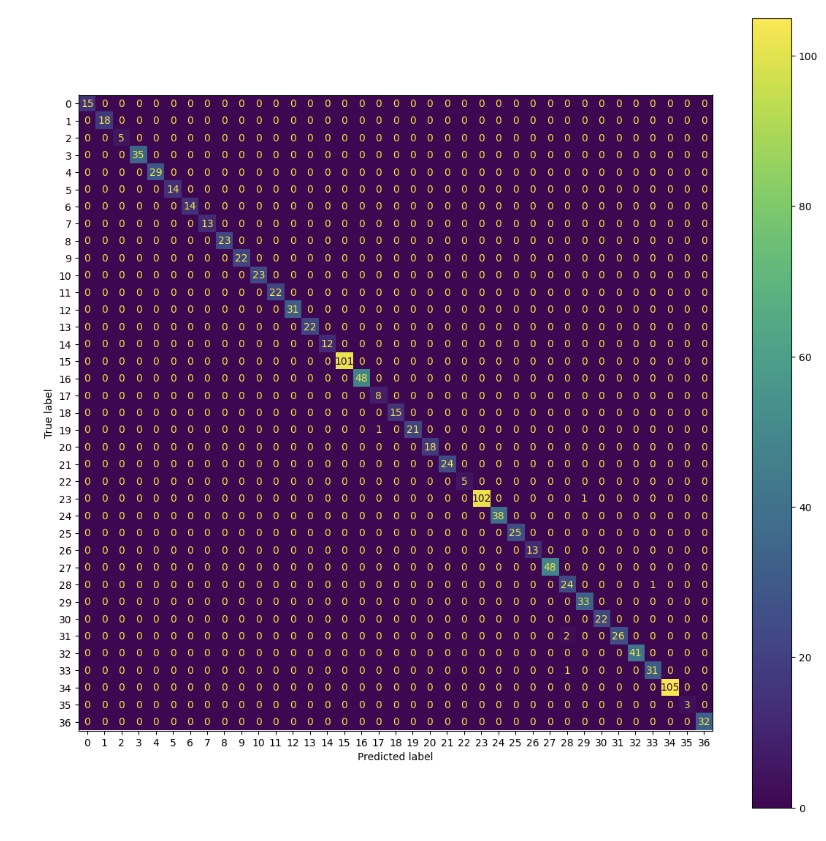
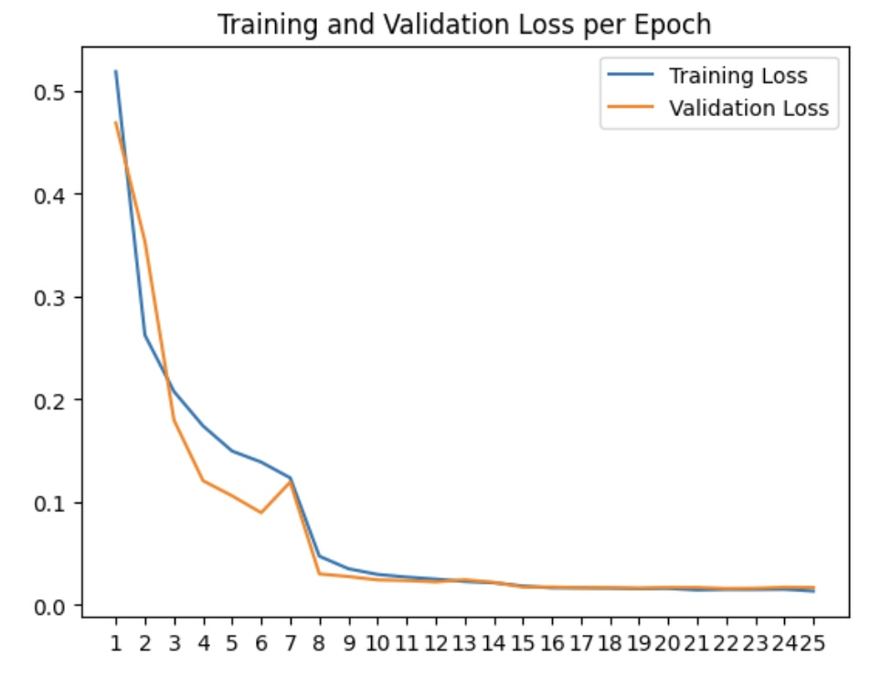
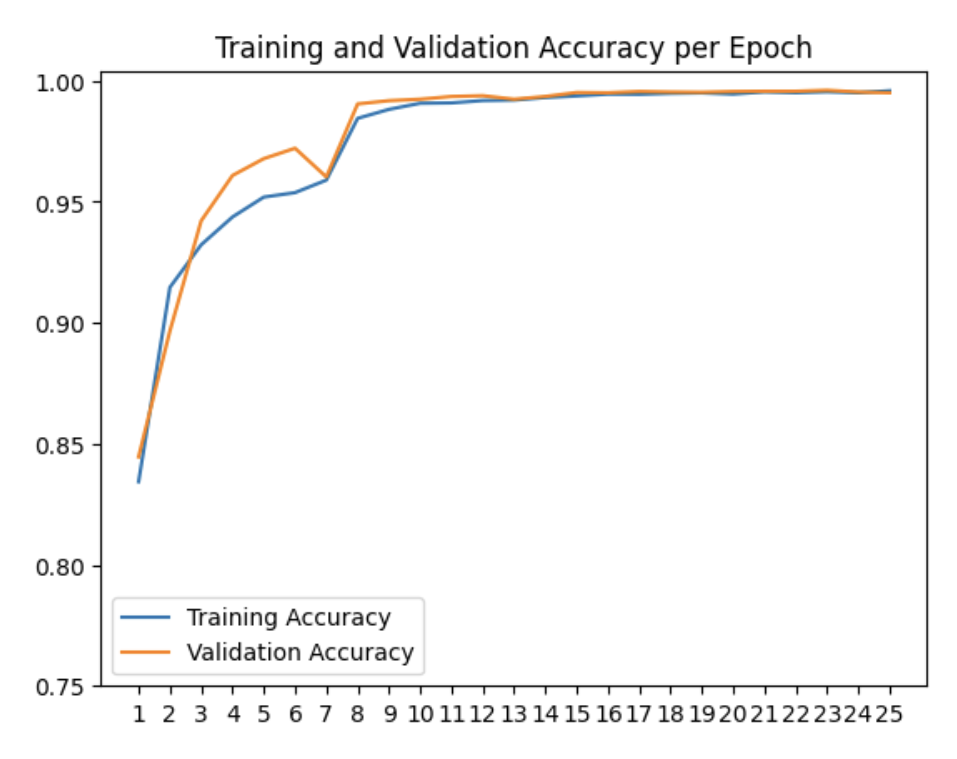

We all depend on crops as a major part of our global food supply, and as a result, the swift detection of crop diseases is essential to maximizing the output of our fields and ensuring the health of the ingredients used in everyday products. However, manual detection of plant diseases is tedious; during the process of identification, disease continues to propagate rapidly. It also requires a high level of expertise and can be highly error prone [3]. Many of these reasons have spurred research efforts to use machine learning and deep learning to train models to identify diseased plants as well as the specific type of disease in order to aid in quick prevention of the spread of harmful blights that can ruin fields of crops. For example, Kurlkarni et al. predicted several types of diseases each for images of five species of crops using a random forest classifier and was able to achieve an average accuracy of 93% [4]. Other papers have ventured beyond traditional machine learning methods; one group used CNNs to classify a dataset of diseased and healthy plant leaves to achieve a 99.3% accuracy [1].
We plan to use the PlantVillage dataset, which contains 54,303 images of healthy and diseased plant leaves from 13 species, including apples, corn, grapes, and tomatoes, with various diseases such as black rot, common rust, and bacterial spot. It can be found here, and the below figure shows some example images from the dataset.
The health of our crops is crucial for meeting our daily needs. Unfortunately, many people lack the knowledge to accurately identify diseases in their plants. To address this issue, we are working on developing a machine learning model that can distinguish between healthy and unhealthy leaf images across various plant species and diseases. Our model could have significant applications in the agriculture industry, as detecting diseased plants is essential for ensuring food security and protecting ecosystems from harm.
When training Resnet and our naive CNN, we employed several forms of data augmentation to supplement our current dataset, including randomly rotating images (by -180 to 180 degrees), and randomly altering the coloring of each image (by reducing/increasing brightness, contrast, saturation, and hue by up to 20%). As images in the dataset were taken in controlled conditions (with the leaves in the same orientation, same lighting, etc.), applying these transformations to the training dataset helped our CNN model become more robust in being able to classify plant diseases outside of the realm of the dataset.
In order to preprocess our images, we utilized a grayscale method to create a grayscale version of the PlantVillage dataset. Opting for grayscale as our preprocessing technique allowed us to remove color bias from the model and reduce computational complexity. Below is a figure displaying an example image from the dataset in color and grayscaled.
For image classification, we employed a decision tree model. We selected a decision tree for training as it is known for its simplicity in computation compared to other models, yet remains highly effective in hierarchically classifying images.
For our naive CNN model, our architecture looks like the following:
We trained our naive CNN using an Adam optimizer, the cross entropy loss function, and trained the model over 25 epochs. We chose to train our own CNN model as CNNs with convolutional and pooling layers in general are highly effective at classifying images, and we wanted to compare this model to the results of applying transfer learning using pre-trained CNNs.
For our third model, we chose to employ transfer learning of ResNet. ResNet is a popular CNN model that is known for introducing residual connections which are used to handle the issue of the vanishing/exploding gradient. In our ResNet model, we chose to use the weights of ImageNet1k, which is a subset of the Image Net dataset that contains 1,000 image classes and over 1 million training images. We then fine tuned this model on Plant Village using the Adam optimizer and the cross entropy loss function, training it for 25 epochs. We chose to apply transfer learning on a highly popular CNN model such as ResNet on the Plant Village dataset, as transfer learning is a simple way of achieving high accuracy on image datasets without having to train a CNN model from scratch. Thus, we wanted to evaluate the accuracy of transfer learning on our specific dataset. Unsurprisingly, the ResNet model was highly accurate!
When running our decision tree model, we trained on different percentages of the Plant Village dataset due to the computational complexity and time involved in training. Below is a visualization of the model accuracy when trained with different percentages of the Plant Village dataset:
The above graph displays how the accuracy of our decision tree model improved with larger percents of the total data used. Unfortunately, as we ran into out of RAM errors when using the full dataset, we were only able to use 75% of the Plant Village dataset. However, we plan to fix these issues so we can use all of our data when training the next two models for the final project.
Below is a Confusion Matrix depicting the results of our naive CNN model.
  Below is a Confusion Matrix depicting the results of our ResNet CNN model.
  As seen in our metrics, though the decision tree classifier made significant progress from randomly guessing what disease a plant has, its accuracy is still relatively low. This could be due to several reasons. Firstly, decision tree models are not the best choice for image data, as image data is high-dimensional (for example, our 256 x 256 pixel dataset led to 65,536 features for the decision tree). Additionally, decision trees consider each feature separately without incorporating spatial information, which is highly ineffective for image data. Finally, since our preprocessing mechanism involved gray-scaling the images, this may have led to loss of some valuable information that resulted in a lower accuracy of the model. Thus, the relatively low accuracy for the decision tree trained on PlantVillage is relatively expected.
As seen in our metrics, the naive CNN model made significant progress from our decision tree model, and achieved an accuracy of 89.4% on the testing dataset. The high accuracy can be expected from a CNN, as they are especially crafted to be able to detect patterns in images (using convolutional layers/filters). However, the accuracy of our naive CNN was lower than applying transfer learning using ResNet; this is likely due to the higher complexity of ResNet when compared to our naive CNN, which may not have been able to capture all the pieces of information in the images necessary to correctly classify them, and the fact that ResNet had pretrained weights on the Image Net dataset (which is much larger than Plant Village).
As seen in our metrics, the ResNet model was the best performing model compared to the decision tree and naive CNN. After being trained 25 epochs, the ResNet achieved an accuracy of 99.44% on the testing dataset. The extremely high accuracy of the ResNet model is due to its higher complexity and the fact that we utilized transfer learning instead of training the CNN from scratch. As the weights we used were from the ResNet being trained on the ImageNet dataset, the ResNet had already learned many features that were useful in classifying plant diseases as well. Thus, 25 epochs of training were enough for the ResNet to achieve an extremely high accuracy.
In terms of accuracy on the testing dataset, the ordering of the models in terms of highest to lowest accuracy is the ResNet CNN, the naive CNN, and then the decision tree. The decision tree model was the simplest model out of the three, which is a large factor for why it had the lowest accuracy. Decision trees are not optimized to handle image data, unlike CNNs. Comparing the naive CNN and the ResNet CNN, transfer learning was more successful due to the fact that ResNet was already pre-trained before we performed transfer learning on the Plant Village Dataset. The ResNet architecture is also more complex compared to our naive CNN, meaning it has more room to learn patterns in the dataset.
Our next steps involve attempting to improve our naive CNN model so that its accuracy is higher than our initial goal of 90%. We plan to do this by adding more layers to the CNN model. Also, though we have only been utilizing the Plant Village dataset so far, we would like to build a larger set of plant disease images, so that our model will be more effective at predicting diseases from images of plants in the real world. We also plan to investigate other pre-processing mechanisms; for example, we plan to run PCA (Principal Component Analysis) on the images to reduce the complexity of the input space and see how that affects accuracy.
In this project, our goal is to develop an effective model to identify diseased and healthy plants. Our model will first take a leaf image of a plant conducting preprocessing to extract key features from the image such as identifying possible areas of lesions. We hope our model will have a classification accuracy above 90% detection for healthy vs unhealthy. This would indicate that our model can be trusted to give correct information, allowing more confident use when applied to the agricultural field. Some current models have achieved 96% accuracy such as the DBN [3]. Therefore, we’ve also set a similar more reasonable goal for our model given our resources. Likewise, we aim for precision and recall rates above 0.90 to indicate fewer false positives and negatives as well as resulting F1 Score around 0.90. A high precision rate is critical in terms of the losses associated with false positives. If the model falsely classifies a crop as diseased, it could result in resources wasted on preventing the spread of disease or the extermination of healthy plants. A high recall rate is important for mitigating the risks of false negatives. If the model fails to classify a diseased crop, the disease would spread, killing fields of crops and resulting in significant economic loss for farms. The derived F1 Score is a concise representation of both false positives and negatives and an overall balance in precision and recall.
[1] Hassan, S. M., & Maji, A. K. (2022). Plant disease identification using
a novel convolutional neural network. IEEE Access, 10, 5390–5401.
https://doi.org/10.1109/access.2022.3141371
[2] Kulkarni, P., Karwande, A., Kolhe, T., Kamble, S., Joshi, A., &
Wyawahare, M. (2021). Plant Disease Detection Using Image Processing and
Machine Learning. https://doi.org/10.48550/arXiv.2106.10698
[3] Shoaib, M., Shah, B., EI-Sappagh, S., Ali, A., Ullah, A., Alenezi, F.,
Gechev, T., Hussain, T., & Ali, F. (2023). An advanced deep learning
models-based Plant Disease Detection: A review of recent research. Frontiers
in Plant Science, 14. https://doi.org/10.3389/fpls.2023.1158933
[4] Kulkarni, P., Karwande, A., Kolhe, T., Kamble, S., Joshi, A., &
Wyawahare, M. (2021). Plant disease detection using image processing and
machine learning. arXiv preprint arXiv:2106.10698
| Name | Midterm Contributions |
|---|---|
| Joanna Cheng | Decision Tree Training, Introduction/Background, Problem Definition |
| Aishwarya Chakravarthy | Decision Tree Training, Methods, Results and Discussion |
| Keerthi Konuganti | Introduction/Background, Problem Definition, Methods, References |
| Felicia Jamba | Introduction/Background, Problem Definition, Methods, References |
| Aaron Liu | Decision Tree Training, Introduction/Background, Problem Definition |